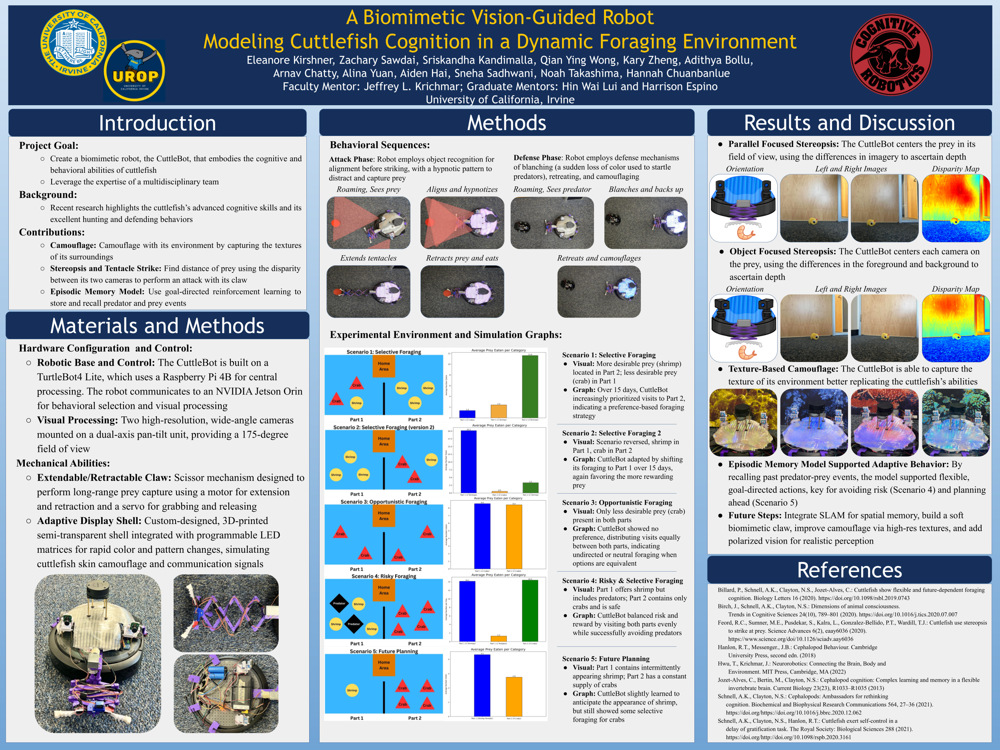
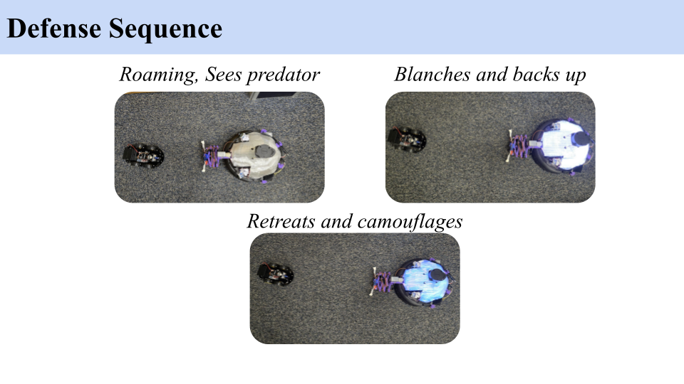
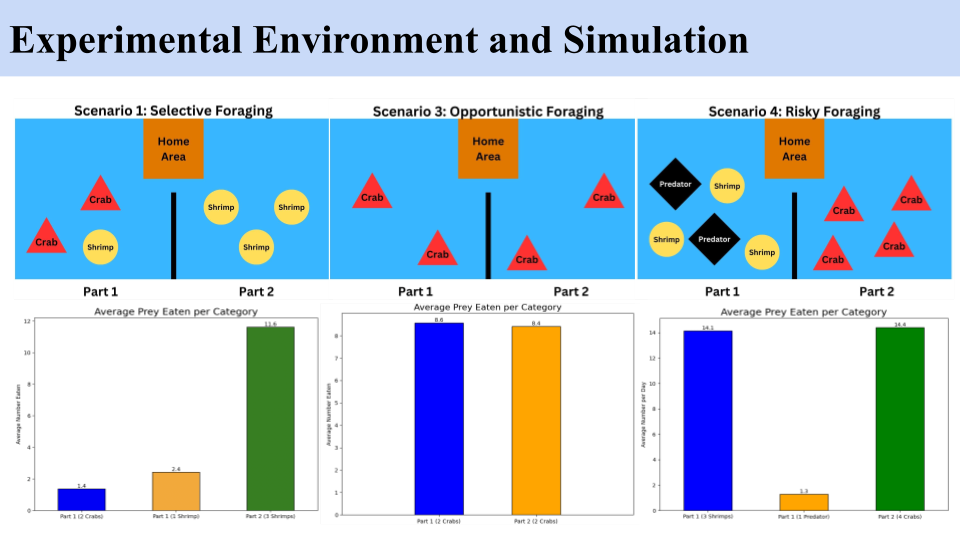
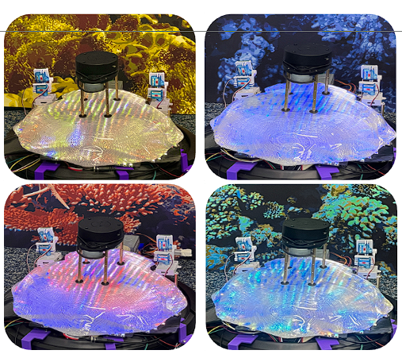

The CuttleBot 2.0 Project
This research project combines reinforcement learning, computational modeling,
and cephalopod neuroscience to explore how episodic-like memory and adaptive
navigation strategies emerge in natural agents, and how they can be implemented
in autonomous systems.

My primary contribution to the CuttleBot 2.0 project was the design and
development of the entire simulation pipeline used to model the neurorobot’s
episodic-like memory, foraging behavior, and reinforcement learning architecture.
I translated biological principles from cephalopod cognition into a computational
framework that could be tested, analyzed, and eventually deployed onto the physical
robot. My work sat at the intersection of cognitive science and AI/ML, focusing on
building systems that learn, adapt, and make context-sensitive decisions.
- Designed and implemented the full 16×16 grid-world simulation environment modeling prey, predators, and foraging regions.
- Built the Q-learning architecture and integrated it with a biologically inspired “what-where-when” episodic-like memory model.
- Developed the agent’s decision-making logic, action set, reward functions, hunger system, and softmax exploration policy.
- Implemented all five experimental scenarios and encoded environmental dynamics such as prey respawning and predator regions.
- Created behavioral metrics, data-logging tools, and visualization scripts to analyze learning, foraging rates, timing behavior, and risk-taking.
- Worked with the physical TurtleBot4 platform and contributed to robotics integration for future deployment.

The computational architecture of the CuttleBot simulation was designed to mirror
the cognitive and behavioral principles observed in biological cuttlefish. At its core,
the agent integrates three components: an episodic-like memory system, a
reinforcement-learning engine, and an abstracted grid-world environment that
reproduces ecological foraging conditions.
The episodic-like memory module encodes the what-where-when of each
encounter—prey type, spatial location, and time step—storing these as structured
memory traces that dynamically inform action selection. These traces shape the
agent’s understanding of reward distribution, predator risk, and temporal patterns in
prey availability.
Decision-making is governed by a Q-learning algorithm built around a
high-dimensional state space including position, heading direction, hunger level, and
temporal context. The agent selects actions through a softmax policy that balances
exploration and exploitation. Rewards for capturing prey, penalties for predator
encounters, and hunger-based modifiers enable the emergence of selective,
opportunistic, and risky foraging behaviors.


As the project progresses toward real-world deployment, I also worked extensively
with the TurtleBot4 hardware to prepare the platform for physical integration.
This involved troubleshooting driver and sensor configuration issues and implementing
the foundational robotics software stack using ROS2. I configured
SLAM for environment mapping, Nav2 for path planning and behavior
tree-based navigation, and tested autonomous movement using LiDAR-based
localization. These components will allow the neurorobot to eventually perform
real-time foraging behaviors in a physical environment that reflects the simulation
conditions.
The simulation provided a controlled environment to evaluate how episodic-like
memory and reinforcement learning shape foraging strategies across five
ecologically inspired scenarios. Over 30 independent 12,000-timestep runs, the
agent demonstrated context-sensitive behavior that aligned with the cognitive
patterns observed in biological cuttlefish.
Key findings included strong selective foraging when desirable prey was abundant,
opportunistic foraging when shrimp was removed, reduced risky foraging in
predator-dense areas, and evidence of temporal learning during periodic prey
replenishment. The agent’s hunger-modulated decision cycles closely matched
expected motivational patterns, and cumulative reward curves showed gradual
improvement in decision efficiency over time.

Together, these results support the hypothesis that episodic-like memory
meaningfully contributes to adaptive behavior. The simulation validated the
underlying cognitive architecture and provides a strong foundation for implementing
the same decision-making system on the physical neurorobot.

Presentations and Pre-print
This project was rewarded a $3000 grant from UROP and Calit2 and I presented at UCI UROP Symposium 2025, UCI Cognitive Science Department Honors Symposium
I co-authored the paper "Episodic-Like Memory in a Simulation of Cuttlefish Behavior", which focuses on the computational model aspect of the CuttleBot 2.0 project.
It is available on BioRxiv and is under review for journal publication.
Code for the computational model available on GitHub.